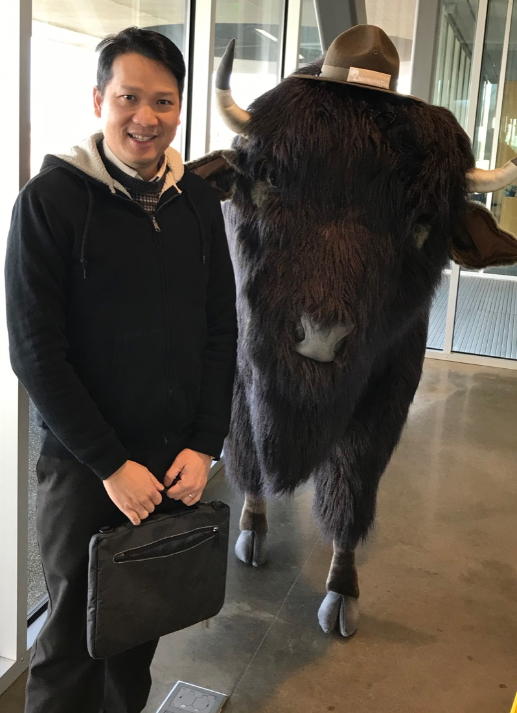

I work to make class time the place where students do their own thinking, with AI on the teacher’s side.
I am a professor and computer scientist at the University of Memphis, where I have been on the faculty since 2003. I do this research in live classrooms rather than controlled studies: what I learn comes from real courses, with real students, during class. Since 2018, instructors have used my systems to run coding exercises in college computer science courses, and I have used what students do there to discover how early a struggling student can be spotted, what a second attempt at a problem is worth, and, with NSF support, how teaching assistants can give better feedback.
My newest project, Polylogue, teaches middle school students the thinking skills they need to reason for themselves rather than hand that work to AI. They read choose-your-path stories, then discuss them with classmates who chose differently. My earlier research is in optimization and bioinformatics.

Research
Generative AI makes it easy for students to hand off the very thinking a course is meant to build. My current research is on the part of a course where that is hardest to do: class time. In both current directions, AI works alongside the teacher, and the thinking stays with the students.
-
Current
CS Education and AI in Education
Since Code4Brownies in 2018, I have built tools that let instructors run short coding exercises live in class, in programming courses and, with Carpo, in data science and machine learning courses. Studies built on that data look at predicting weekly performance in CS1, the benefit of a second attempt on an in-class problem, early support for struggling students, and NSF-funded work on training teaching assistants to give effective feedback. Recent work turns to collaboration between teachers and generative AI, and to K-12 teachers creating their own AI tools.
-
New direction
Polylogue
An approach to teaching middle school students to think for themselves rather than offload their thinking to AI. It builds skills that call for judgment, from weighing evidence to noticing when a friend is struggling. Students read illustrated, choose-your-path stories, then discuss them with classmates who chose differently. Teachers and researchers co-design the stories with the help of AI; students never interact with an AI.
-
Earlier work
Machine Learning and Optimization
Models and algorithms for decisions with competing objectives. The most recent work optimizes how a limited budget is divided between scholarships and need-based financial aid to improve access and affordability; it received the Best Full Paper Award at EDM 2022. Earlier work covers time-sensitive metaheuristics for black-box combinatorial optimization and the design of DNA codes for computing and self-assembly.
-
Earlier work
Bioinformatics
Algorithms and software for genomic data: identifying bacteria in microbiomes (MetaBIDx), aligning short reads and detecting variants, explaining aligner performance through the repeat complexity of genomes, and, with NSF support, analyzing gene-expression responses across multiple treatments (mDAG).
Highlights
-
Polylogue
An approach to teaching middle school students to think for themselves rather than offload their thinking to AI, through illustrated, choose-your-path stories that they discuss with classmates who chose differently.
-
CoAIRS grant
“Multi-Agent AI for Critical Thinking in Middle School Project-Based Learning,” with Amy Cook, Brandon Booth, and Yeonji Jung (Texas A&M University).
-
Faculty Research Grant
University of Memphis grant for “Enabling Teacher-AI Collaboration to Maximize In-Class Learning.”
About
I am an Associate Professor of Computer Science. I have taught courses focused on problem-solving methods and large-scale data analysis, and my teaching has been recognized with the Thomas W. Briggs Foundation Excellence in Teaching Award (2012), the Pat Burlison Professorship (2018), and the College of Arts and Sciences Distinguished Teaching Award (2022).
I earned a bachelor’s degree in Mathematics and Computer Science from Brandeis University and a Ph.D. in Computer Science from Stony Brook University, where I studied under Professor Steven Skiena.